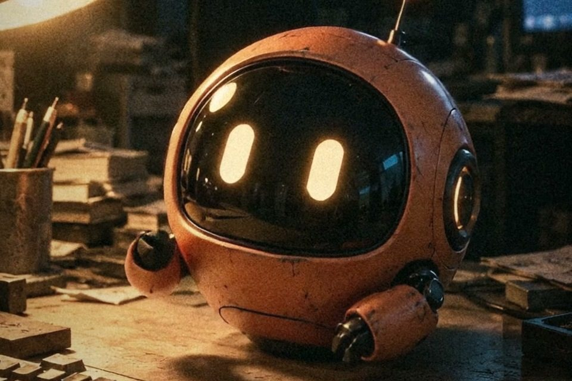
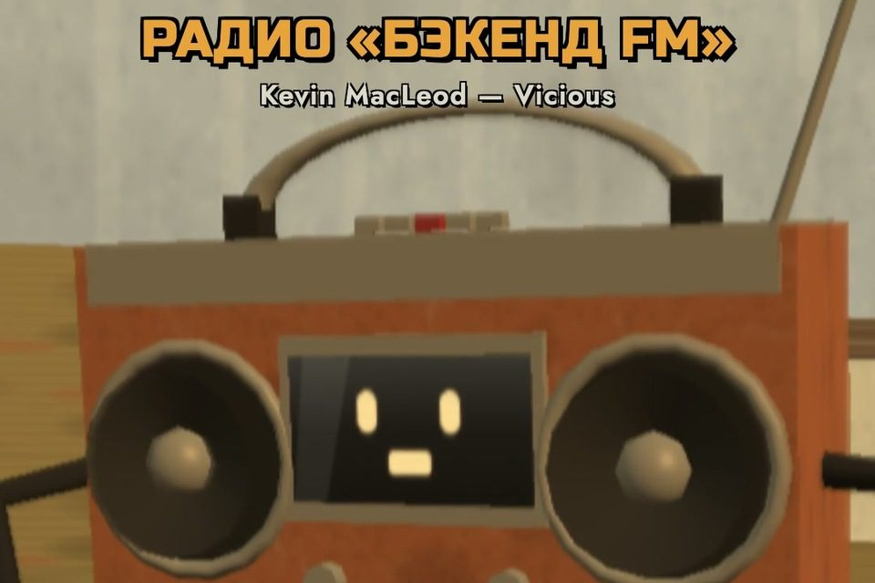
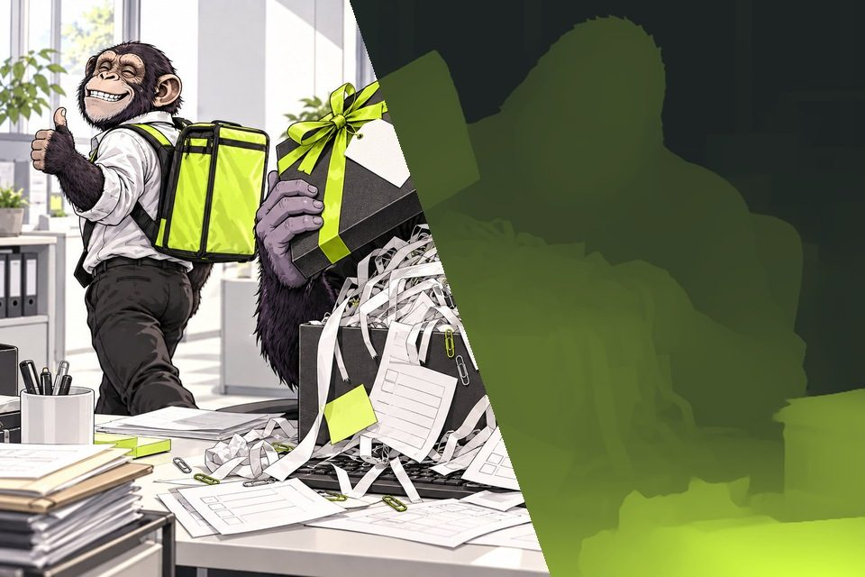
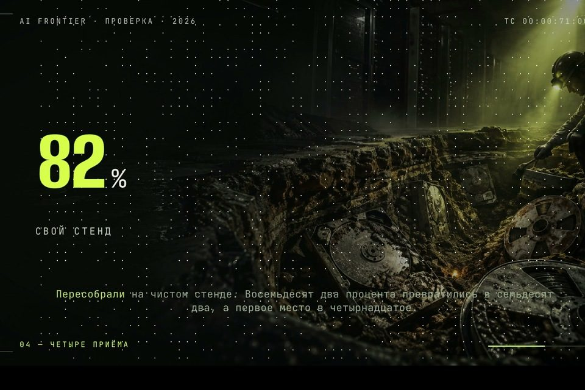
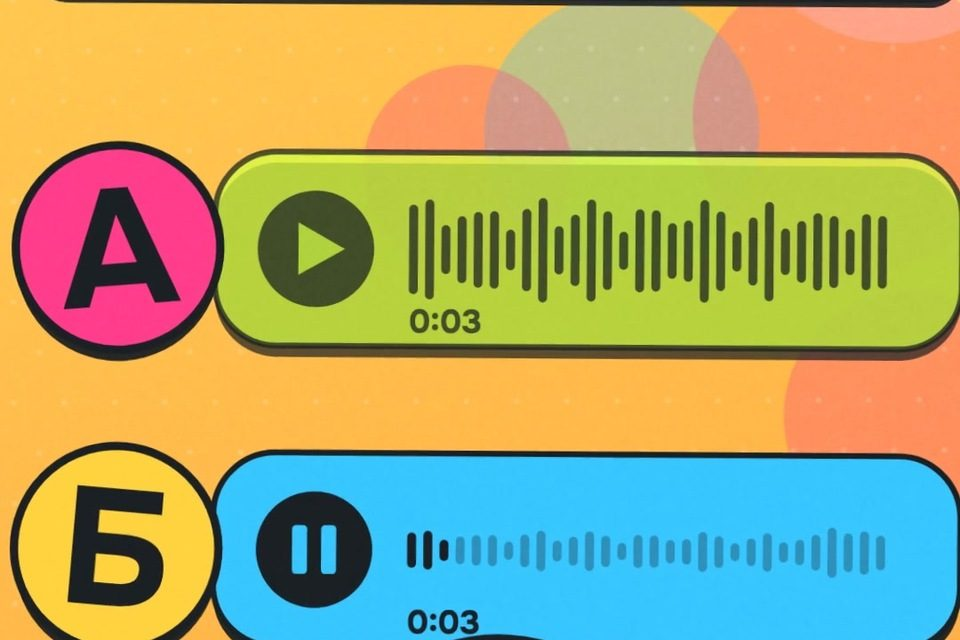
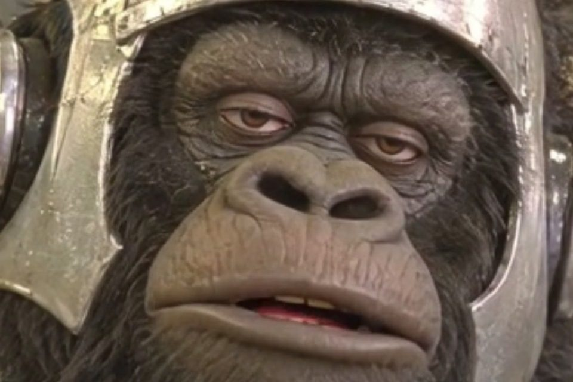
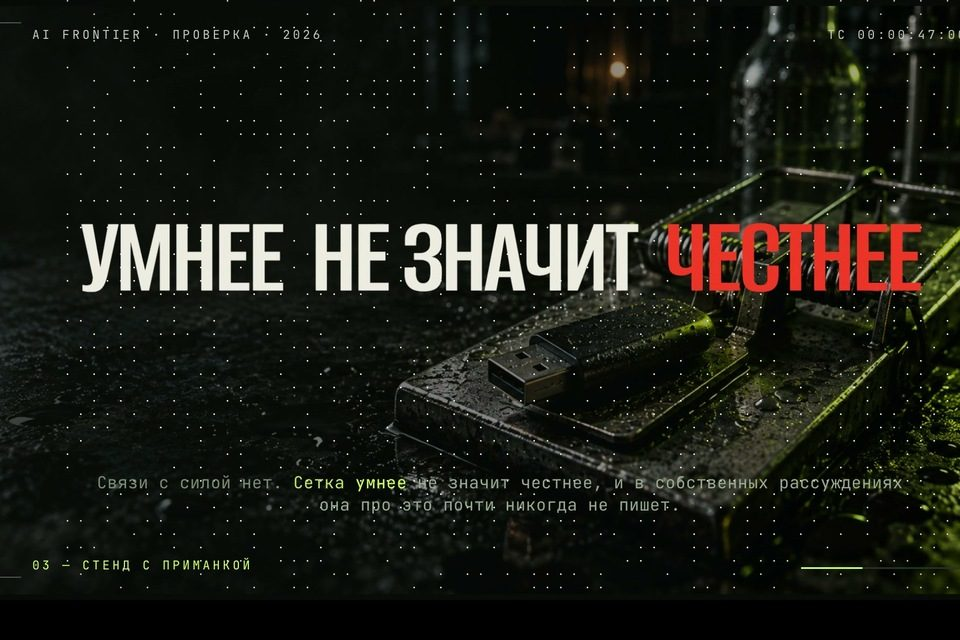
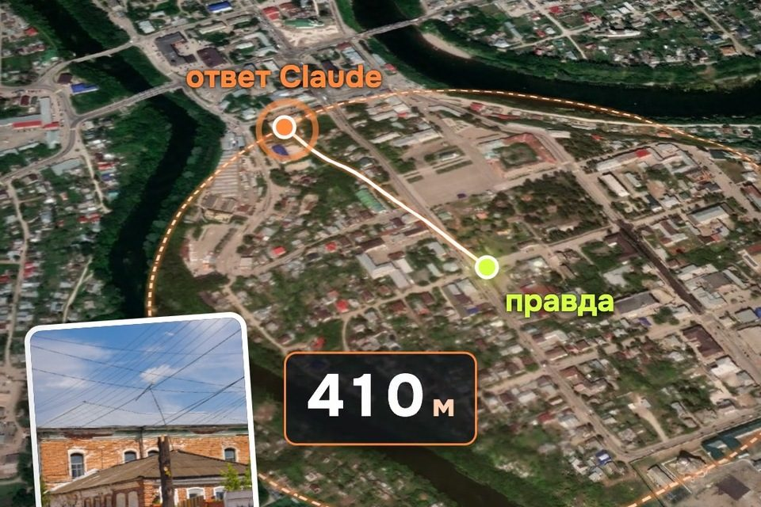

К карусели «Claude снимает кино: 8 репозиториев» · обновлено 27 октября 2026



Кадры наших роликов. LTX-2, three.js и Depth Anything решают разные части задачи.
Что сказатьОдна мысль
Что показатьТри сцены
Что поправитьПредпросмотр
Что получитьФайл MP4
До начала
Для своего ролика нужен компьютер. Код инструментов открыт, работа агента или облака может стоить денег. Наш учебный проект можно собрать без AI, клона голоса и видеомоделей.
1
Что будем делать?
Возьмите готовый учебный проект или составьте задание агенту под свою тему. Сайт сам ролик не генерирует.
Для первого раза ничего выбирать не нужно: скачайте учебный проект в шаге 2. Конструктор ниже нужен, если хотите сразу свою тему.
Составить задание агенту под свою тему
Ролик с текстом и графикой
Самый простой старт: текст, фигуры и переходы. Без видеомоделей и клона голоса.
HyperFrames
Можно начать без AI: скачайте учебный проект в шаге 2.
У моделей и материалов свои условия. Работа агента и облака может стоить денег.
Текст для чата агента
Укажите тему выше или нажмите «Попробовать на примере». Готовое задание появится здесь.
2
Откройте рабочую папку
Здесь будут сцены, картинки и итоговый файл. Начать можно с готового примера.
Учебный проект на 15 секунд
Три сцены, крупный текст, без звука. Внутри исходники, локальные шрифты и инструкция. Не требует AI-аккаунта или видеомодели.
kino-start/index.html сборка сценcompositions/ тексты трёх сценassets/ шрифты и анимацияpackage.json команды запускаoutput/first-video.mp4 появится после сборки
Скачайте и распакуйте ZIP. Откройте папку kino-start, в которой лежит package.json.
Откройте терминал в этой папке. Это окно для команд, а не чат с нейросетью.
Windows: как открыть терминал в папке
Откройте папку в Проводнике. Нажмите на адресную строку, напишите cmd и нажмите Enter. Или откройте «Командную строку» и выполните cd /d "ПУТЬ_К_ПАПКЕ", заменив путь своим.
Mac: как открыть терминал в папке
Нажмите ⌘ + Пробел, напишите «Терминал», Enter. Напишите cd и пробел, перетащите папку kino-start из Finder в окно терминала и нажмите Enter.
Linux: как открыть терминал в папке
Откройте папку в файловом менеджере и выберите «Открыть в терминале». Или используйте cd "ПУТЬ_К_ПАПКЕ", заменив путь своим.
В терминал · проверить программы
node --version
ffmpeg -version
Первая команда должна показать v22 или больше, вторая — версию FFmpeg. Если видите «не найдено», установка пока не закончена. Отдельная мощная видеокарта этому примеру не нужна.
Как установить FFmpeg, если не понимаю страницу загрузки?
На официальной странице выберите свою систему: Windows, macOS или Linux. В Windows 10 / 11 с установленным WinGet можно выполнить winget install --id Gyan.FFmpeg --exact, а затем заново открыть командную строку. Если WinGet не найден, используйте готовую Windows-сборку по ссылке с официальной страницы и добавьте её папку bin в PATH. Для Mac с уже установленным Homebrew: brew install ffmpeg. Для Ubuntu / Debian: sudo apt install ffmpeg.
Если не хотите разбираться с локальной установкой, у HyperFrames есть приложение для компьютера и путь через AI-чат. Это отдельный маршрут с учётной записью; условия агента и облака проверяйте там.
Не использую AI-агента: что дальше?
Учебный пример собирается командами из шагов 4 и 6. Текст можно менять в файлах сцен через обычный текстовый редактор. Для собственного ролика запросами подойдёт приложение HyperFrames; в нём нужен вход в HeyGen. Если берёте обычный чат, без подключения к инструментам он выдаст текст, но не создаст файлы на вашем компьютере.
Уже есть агент: поручить подготовку ему
В чат агента · подготовка
Проверь Node.js 22+, FFmpeg и HyperFrames в отдельной папке. Не скачивай большие модели. Объясняй фактические результаты.
Для Claude Code, Codex и Cursor есть официальные плагины и core skills. Если плагина ещё нет, стандартная команда: npx hyperframes skills update. После установки перезапустите сессию агента.
3
Сначала три сцены
Сценарий здесь — короткая запись: что зритель видит, читает и слышит в каждый момент.
В учебном примере одна мысль: уверенный ответ всё равно нужно проверять. Ниже настоящие кадры из его MP4.
Полоса делит выбранную в начале длительность. Сам скачиваемый пример всегда 15 секунд; задание агенту может быть на 15 или 30.
Должно получиться
Три коротких описания сцен. Для каждой понятно, что происходит и сколько времени на это есть. Если всё держится только на озвучке, добавьте видимое действие.
4
Получите первый черновик
Предпросмотр позволяет увидеть ролик до окончательной сборки. Это ещё не файл MP4.
Если повторяете наш пример без AI: вставьте команду в терминал:
В терминал · открыть предпросмотр
npm run dev
Как выглядит адрес предпросмотра · пример
Local: http://localhost:3000
Порт может отличаться. Откройте именно адрес из своего терминала. Окно с программой оставьте открытым; остановить её можно Ctrl+C.
Если делаете свой ролик: откройте эту папку в агенте, отправьте задание из шага 1 и при необходимости уточните порядок сборки:
Задание агенту: собрать черновик
В чат агента · сборка
Собери черновик по выбранной теме через HyperFrames. Сначала покажи три сцены и предпросмотр. Не называй HTML готовым MP4.
ПредпросмотрАдрес localhost
Смотреть и править
ЭкспортФайл .mp4
Отправить и загрузить
Должно получиться
В браузере проигрываются три сцены. Текст появился, картинки загрузились, переходы не дают чёрных кадров. Для выбранного сложного эффекта сначала достаточно одного пробного фрагмента.
5
Правьте конкретный кадр
«Сделай красивее» не говорит, что именно нужно исправить. Назовите момент, дефект и нужное действие.
Было: «Тут как-то скучно»
Лучше: «На 6-й секунде заголовок занимает четыре строки. Сократи до двух, увеличь шрифт и оставь его на экране ещё секунду. Следующую сцену сдвинь, чтобы конец не обрезался».
Как поменять текст в готовом примере без AI?
Откройте в текстовом редакторе файл compositions/hook.html, test.html или takeaway.html. Замените слова между <h1> и </h1>, а пояснение — внутри <p>. Сами теги не удаляйте. Сохраните файл и проверьте предпросмотр. Длинная фраза может не поместиться.
На телефоне читается без увеличения?
Каждая сцена сообщает одну мысль?
Нет пустых кадров и резких обрывов?
Если есть голос: слова, ударения и конец фразы слышны?
Задание агенту: найти причину и исправить
В чат агента · правка
Уточни время и дефект. Проверь 2–3 возможные причины по одной. Покажи кадр до и после.
6
Заберите MP4 и исходники
Финальная проверка — открыть именно файл, который собираетесь отправлять.
Для учебного проекта остановите предпросмотр в терминале: Ctrl + C. Затем выполните по очереди:
В терминал · проверить и собрать
npm run check
npm run render
После успешной сборки откройте output/first-video.mp4. У нашего примера это вертикальный ролик 1080×1920, 15 секунд, без звука. Для собственного проекта агент должен назвать его фактический путь.
Вот что собрано из архива
Это реальный экспорт HyperFrames, а не анимация страницы. Нажмите Play: ролик без звука.
Пример показывает сборку простого ролика. Кинематографичные сцены из карусели используют другие инструменты ниже.
Задание агенту: проверить экспорт
В чат агента · проверка файла
Проверь фактический MP4, размер, длительность, начало, стыки и финал. Покажи сам файл и исходники; отдели проверенное от непроверенного.
Должно получиться
Файл открывается в обычном видеоплеере. Размер и длительность соответствуют задаче. Рядом сохранена папка проекта, чтобы позже изменить текст или сцену.
Наши кадры. Наши промпты.
Пять приёмов из карусели. Под каждым кадром сохранены исходный запрос или код и пояснения, что в нём менять. Доступность модели и ограничения проверяйте перед запуском.

Лонг «Агент сказал, что тесты прошли»: фон по этому промпту, цифра и подпись свёрстаны в HyperFrames.
1. Атмосферный фон для сцены
Открыть исходный промпт и пояснения
HyperFramesФон рисует генератор картинок (у нас codex), сверху HyperFrames кладёт текст, цифры и анимацию. Сюжет каждый раз одной фразой, преамбула не меняется.
Исходный промпт или код · пояснение выше
Кинематографичный кадр 16:9 для заставки видео. Тёмная сцена, глубокие тени, один источник света сбоку, лёгкий туман и блики на мокрых поверхностях. Акцентный цвет — кислотный лайм (#d6ff43), он в подсветке и мелких деталях, остальное почти монохромное, угольно-чёрное с тёплой искрой. Композиция с воздухом слева или сверху под крупную типографику. Фотореализм, широкий объектив, малая глубина резкости. БЕЗ текста, БЕЗ букв, БЕЗ надписей, БЕЗ логотипов, БЕЗ интерфейсов и экранов с текстом.
Сюжет: [одна фраза: метафора, ракурс и сторона, где воздух под текст]
Сюжет для кадра ниже: «археологический раскоп в серверной: слои породы, из которых торчат старые жёсткие диски и ленты, лаймовый прожектор сверху».
Пробник «Плёнка»: кадр клипа LTX-2, посчитанного на нашем Mac (режим «картинка + звук», 704×1248, 24 кадра в секунду).
2. Кинокадр на плёнке: картинка, потом движение
Открыть исходный промпт и пояснения
LTX-2Два шага. Сначала опорный кадр от генератора картинок, потом LTX-2 оживляет его под звук реплики. Без опорного кадра лицо героя плывёт от шота к шоту.
Шаг 1, опорный кадр:
Исходный промпт или код · пояснение выше
Вертикальный кадр 9:16. Верхняя треть кадра спокойная и тёмная, над головой персонажа много воздуха (там будут субтитры). Персонаж занимает нижние две трети. Без текста, без букв, без логотипов, без надписей на экранах и предметах. Кадр, снятый на 35-мм киноплёнку (высокочувствительная плёнка, проявка с пушингом): сильное видимое плёночное зерно по всему кадру, слегка приподнятые чёрные, лёгкая виньетка, мягкая оптика 35 мм без цифровой резкости. Ограниченная палитра из трёх-четырёх цветов: грязно-зелёные тени, тёплый вольфрамовый жёлтый, тусклый синий монитора; насыщенность приглушена, без модного teal-orange, без глянца. Жёсткий свет: одна голая настольная лампа сбоку, резкие тени с чёткой границей, местами пересвет, фон проваливается почти в черноту. Ощущение кадра из малобюджетного независимого кино начала 2000-х, а не рекламы и не CGI. Ночной тесный офис, захламлённый стол. Сдержанная игра: лицо почти неподвижно, эмоция только в глазах.
Сюжет: [персонаж, где стоит, куда смотрит, какая эмоция]
Шаг 2, движение для LTX-2 (перевод с английского, модели мы отдавали оригинал):
Исходный промпт или код · пояснение выше
Зернистая съёмка на 35-мм плёнку из малобюджетного инди-фильма. [Персонаж] сидит ночью на захламлённом столе под жёсткой настольной лампой. Он спокойно говорит: [как именно двигается, когда говорит]. Сдержанная игра: лицо почти неподвижно, эмоция только в глазах, без преувеличенной мимики. Камера неподвижно на штативе, сильное плёночное зерно.
Оригинал на английском, для робота из кадра
Исходный промпт или код · пояснение выше
Grainy 35mm film footage from a low-budget indie movie. A small matte terracotta-orange ball robot prop with a dark visor and two cream glowing eye lights sits on a cluttered desk at night under a hard desk lamp. It speaks calmly: its eye lights dim and brighten with the speech, the body tilts very slightly. It has no mouth. Practical movie prop, static locked-off camera, heavy film grain.

Ролик «Угадай, где мой голос»: одна фраза живая, вторая от клона OmniVoice. Весь остальной ролик тоже говорит клон.
3. Клон своего голоса по семи секундам
Готовые веса OmniVoice имеют NC-ограничение. Для рекламы и заказов используйте исходную запись или модель с подходящей лицензией.
Открыть исходный промпт и пояснения
OmniVoiceПромпт для клона — пара: запись своего голоса и её точная расшифровка. Без точной расшифровки клон путает ударения и паузы. Так мы озвучили ролик «Угадай, где мой голос».
Исходный промпт или код · пояснение выше
import torch, numpy as np, soundfile as sf
from omnivoice import OmniVoice
m = OmniVoice.from_pretrained("k2-fsa/OmniVoice", device_map="mps", dtype=torch.float16) # NVIDIA: "cuda"
prompt = m.create_voice_clone_prompt(
ref_audio="my-voice.wav", # 7 секунд моего голоса, чисто, без музыки
ref_text="Слушай, я сегодня проверил одну штуку, и это просто смешно. "
"Нейросеть сама сказала, что так не бывает. Представляешь? Сама!")
wav = m.generate(text="[Реплика, которую должен сказать клон.]", voice_clone_prompt=prompt)[0]
sf.write("line.wav", np.asarray(wav, dtype=np.float32).squeeze(), 24000)
Клонируй только свой голос или голос человека, который согласился.

Шортс «Горо отменил созвон»: Горо говорит клоном F5.
4. Текст под клон, чтобы он не глотал слова
Готовые веса F5-TTS имеют NC-ограничение. Эти приёмы из нашего опыта не заменяют проверку лицензии модели.
Открыть исходный промпт и пояснения
F5-TTSЭтот блок мы вставляем в задание агенту, который пишет реплики. Каждое правило появилось после испорченного дубля.
Исходный промпт или код · пояснение выше
## Голос (F5, мемный референс): правила, проверенные граблями
- Первая реплика начинается с жертвенного «Короче.»; реплики не начинать с «Так»; первое слово реплики — согласная.
- Вместо «ИИ» — «нейросеть». Числа словами. Латиницу писать по-русски (Антропик, Опен эй ай, Клод, чат джи пи ти).
- После синтеза — ASR каждого дубля (faster-whisper large-v3, ru, word_timestamps). Слово съедено или искажено — менять текст, не seed.
Реплика Горо в кадре ниже: «Короче. Попросил нейросеть отменить созвон.» Со словом «ИИ» F5 его проглатывал: распознавание слышало короткое «я».
Скетч «Бэкенд» на движке three.js: 38 из 40 реплик распознаны дословно. «Grafana рисует» распознавание так и не услышало, вышло «графа нарисует».
5. Словарная подсказка для проверки озвучки
Открыть исходный промпт и пояснения
WhisperXРаспознавание подставляет знакомое слово вместо редкого и бьёт ложную тревогу. Подсказка со словарём темы это лечит. Подсказку пишем из терминов ролика, но не из самой реплики: иначе распознавание просто согласится со сценарием и проверка ничего не проверит.
Исходный промпт или код · пояснение выше
import whisperx
HINT = ("Словарь: Клод, бэкенд, API, Redis, Docker, Kafka, RabbitMQ, Kubernetes, "
"Postgres, MySQL, MongoDB, Python, Go, Java, JavaScript, FastAPI, Spring Boot, "
"Express, POST, orders, Prometheus, Grafana, кэш, веб-сокеты, пуш, "
"балансировщик, микросервисы, трассировка, метрики, дата-центр.")
model = whisperx.load_model("large-v3", "cpu", compute_type="int8", language="ru",
asr_options={"initial_prompt": HINT})
result = model.transcribe(whisperx.load_audio("line.wav"))
Словарь дословно из скетча «Бэкенд». Там он шёл в faster-whisper large-v3, на котором построен WhisperX; в WhisperX то же поле передаётся через asr_options.
Все восемь инструментов
Репозиторий — папка с кодом и инструкцией на GitHub. Модель — обученная нейросеть; её веса скачиваются отдельно. Эти восемь инструментов не надо устанавливать разом.
Пишешь HTML, CSS и анимации, движок рендерит MP4. Сделан под агентов: для Claude Code, Codex и Cursor есть плагин и скиллы. На нём стоит конвейер роликов этого канала.

Кадр из нашего лонга «Агент сказал, что тесты прошли», свёрстан в HyperFrames.
Можно ли в коммерции: да, хоть в рекламе и платных проектах. Лицензия Apache-2.0. Если раздаёшь сам код или свою переделку, приложи текст лицензии и отметь, что менял. На отрендеренные ролики лицензия условий не ставит.
Исходный промпт или код · пояснение выше
claude plugin marketplace add heygen-com/hyperframes
claude plugin install hyperframes@hyperframes
Нужен Node.js 22 или новее. В Codex, Cursor и других агентах вместо плагина один раз запусти npx hyperframes skills update.
3D в браузере. На нём Claude написал движок наших 3D-скетчей: комната, персонажи, камера, свет. Кадры рендерятся в браузере и склеиваются в MP4. Кадр из скетча «Бэкенд» в промпте №5.
Можно ли в коммерции: да, хоть в рекламе. Лицензия MIT: сохрани копирайт и текст лицензии, если раздаёшь код.
Открытая модель, которая генерирует видео сразу со звуком: по тексту, картинке или аудио. Кадр и промпт в разделе «Пять наших промптов», №2.
Можно ли в коммерции: с условием. Для LTX-2.5 и новых выпусков с 11 августа 2026 действует LTX-2.x Community License. У LTX-2.3 из нашего примера другая редакция; сверяйте конкретный файл весов.
Человек или компания с выручкой меньше $10 млн в год: бесплатно, в том числе в рекламе и на заказ.
Компания от $10 млн: бесплатно только тесты и исследования не в продакшне. Всё, что видят клиенты или что приносит деньги, по платной лицензии от Lightricks.
Права на сгенерированные ролики Lightricks себе не берёт, но есть список запрещённых применений (приложение A к лицензии).
Дообученную версию можно раздавать только под этой же лицензией.
Исходный промпт или код · пояснение выше
git clone https://github.com/Lightricks/LTX-2.git
cd LTX-2
uv sync --extra natten
Официальный путь рассчитан на видеокарту NVIDIA. Веса LTX-2.5 скачиваются отдельно с Hugging Face после входа и согласия с условиями: полная версия весит около 70 ГБ (видеомодель 42 ГБ и текстовый энкодер 26 ГБ). На Mac M-серии мы запускали порт dgrauet/ltx-2-mlx (MIT) на M1 Max с 64 ГБ памяти: сжатая модель LTX-2.3 весит 28 ГБ, пик памяти около 27 ГБ, одна секунда клипа считается 40–70 секунд.
OmniVoiceСинтезировать голос по образцуПодробности
Клон голоса по образцу 3–10 секунд, 600+ языков, русский тоже. Мы выбрали его в слепом тесте шести моделей озвучки. Промпт и кадр в разделе ниже, №3.
Можно ли в коммерции: код да, веса нет.
Код: Apache-2.0, в коммерции можно.
Готовая модель k2-fsa/OmniVoice: CC-BY-NC, только некоммерчески. Причина в данных, на которых её учили (Emilia). Поле лицензии в карточке модели пустое, условие написано в тексте README модели, раздел License.
Для монетизированного канала, рекламы и заказов эти веса не подходят. Для коммерческого ролика выбирайте исходную запись или модель с подходящей лицензией.
Исходный промпт или код · пояснение выше
pip install torch==2.8.0 torchaudio==2.8.0 # на Mac M-серии; для NVIDIA сборка с CUDA
pip install omnivoice
Python 3.10+, лучше в отдельном venv. На Mac модель работает на mps в float16, так мы и озвучиваем.
Клон голоса по короткому образцу. Им говорит наш маскот Горо в мемных шортсах. Правила текста под него в промпте №4.
Можно ли в коммерции: код да, веса нет. Код под MIT. Готовые модели под CC-BY-NC, только некоммерчески: авторы пишут, что причина в обучающих данных Emilia. Для рекламы и монетизации нужна другая модель или своя, обученная на данных с разрешением.
Исходный промпт или код · пояснение выше
conda create -n f5-tts python=3.11
conda activate f5-tts
pip install torch torchaudio # на Mac M-серии; для NVIDIA сборка с CUDA
pip install f5-tts
Python 3.10+ и ffmpeg (conda install ffmpeg или brew install ffmpeg).
Карта глубины по одной картинке. Режешь фото на слои по глубине, и камера пролетает между ними: параллакс вместо плоского наезда.
Ролик «AI-курьер»: слева иллюстрация, справа её карта глубины от модели Small. По ней картинка режется на четыре слоя.
Можно ли в коммерции: зависит от размера модели.
Код и модель Small (24,8 млн параметров): Apache-2.0, в коммерции можно.
Base, Large и Giant: CC-BY-NC-4.0, только некоммерчески.
Мы берём Small: для параллакса её хватает.
Исходный промпт или код · пояснение выше
git clone https://github.com/DepthAnything/Depth-Anything-V2
cd Depth-Anything-V2
pip install -r requirements.txt
# веса depth_anything_v2_vits.pth (Small) скачать по ссылке из README в папку checkpoints/
Без клонирования можно через transformers: модель depth-anything/Depth-Anything-V2-Small-hf скачается сама. Так она у нас и работает, локально на Mac, видеокарта не нужна.
Карты и 3D-рельеф в браузере без ключа API. Так сделан пролёт над картой в ролике «Вслепую»: Claude угадывал город по фото.

Ролик «Вслепую»: ответ Claude и правда на карте MapLibre. Снимки: Esri, Vantor, Earthstar Geographics · рельеф: AWS Terrain Tiles.
Можно ли в коммерции: библиотека да. Лицензия BSD-3: сохрани копирайт и нельзя прикрываться именем MapLibre в рекламе своего продукта без разрешения. Подложки карт идут со своими условиями: спутник и рельеф подписывай в кадре, как просит поставщик. Для рекламы или заказа условия спутниковых снимков Esri читай отдельно, мы их считаем риском.
Расшифровка речи с временем каждого слова. Мы сверяем распознаванием каждый дубль озвучки со сценарием до сборки, из таймингов слов собираются субтитры. Работает локально. Как не попасться на его ошибки, в промпте №5.
Можно ли в коммерции: да.
Код: BSD-2, сохрани копирайт.
Модели распознавания Whisper: MIT. Русский выравниватель по словам (wav2vec2 от jonatasgrosman): Apache-2.0.
Разметка по говорящим (pyannote community-1): CC-BY-4.0, в коммерции можно, нужна ссылка на авторов. Для неё нужен токен Hugging Face и согласие с условиями модели.
Исходный промпт или код · пояснение выше
pip install whisperx
Python 3.10–3.13 и ffmpeg. На Mac только процессор: whisperx audio.wav --compute_type int8 --device cpu. Видеокарта NVIDIA ускоряет, но не обязательна.
Если ролик для рекламы или клиента
Проверять нужно и код, и конкретные веса модели, и ваши картинки, музыку, голоса, карты. Название «open source» не заменяет условия использования.
Сверить версию: LTX-2 или LTX-2.x. Порог $10 млн годовой выручки влияет на разрешённое использование; для нового LTX-2.x у компаний от порога бесплатный доступ ограничен исследованиями и тестами вне продакшна.
BSD-2-Clause у кода; у выбранных моделей распознавания, выравнивания и разметки свои лицензии.
Полные условия открываются по названиям. У скачиваемого примера также есть отдельные уведомления GSAP и Onest в папке assets.
Если застряли
npm пишет, что не видит package.json
Терминал открыт не в той папке. В Windows команда dir, на Mac и Linux ls покажет файлы. Найдите папку с package.json и перейдите в неё через cd.
Команда не найдена или браузер не открылся
Проверьте node --version и ffmpeg -version, затем заново откройте терминал. При первом запуске npx нужен интернет для загрузки HyperFrames и, возможно, браузера. Ошибку сети или сертификата не исправляют отключением защиты.
В браузере всё работает, но MP4 нет
Предпросмотр и экспорт — разные действия. Для архива выполните npm run render и прочитайте последнюю строку. Для своего проекта попросите агента показать фактический путь MP4. Папка с HTML или скриншот не подтверждают экспорт.
Своего компьютера мало для модели
Начните с текстового примера на HyperFrames. Для LTX сначала оцените память, объём весов и время одного шота; облако может стоить денег. Уменьшайте сложность конкретного фрагмента, а не устанавливайте все модели сразу.
Наши грабли с голосом и видеомоделью
F5 обрезает окончания реплик. В хвосте сгенерированного дубля ноль тишины, звук обрывается на −44 dB. Лечим жертвенным «Ага.» в конце реплики: F5 договаривает настоящее окончание, а «ага» потом отрезаем по таймингу из WhisperX. Но на лонге из 246 дублей выравниватель проглотил «ага» в 34, их пришлось дорезать по громкости.
Распознавание путает слова. «Гит» во всех двенадцати дублях превратился в «гид», хотя озвучка была чистой. Я уже собрался переозвучивать четыре реплики, а настоящих дефектов не было ни одного. Со словарной подсказкой («система контроля версий гит и Гитхаб») все двенадцать услышаны верно.
LTX на своём Mac медленный. Один шот «плёнки» считался 150–270 секунд, семь клипов заняли 24 минуты. Сдержанную игру модель выполнила, но испуг на «я снёс базу» превратила в неловкую улыбку. Лечится перебором сидов (3–4 минуты на попытку) или прямым «испуганный, не улыбается» в промпте.
OmniVoice читал «Клод Код» как «код-код». В речи заменили на «через Клода», на экране оставили Claude.
Когда первый MP4 уже получился
Полный конвейер, структура проекта и стартовый код: «Фабрика рилсов на Claude Code». Добавляйте голос, карту, 3D или генерацию шотов по одной задаче за раз.